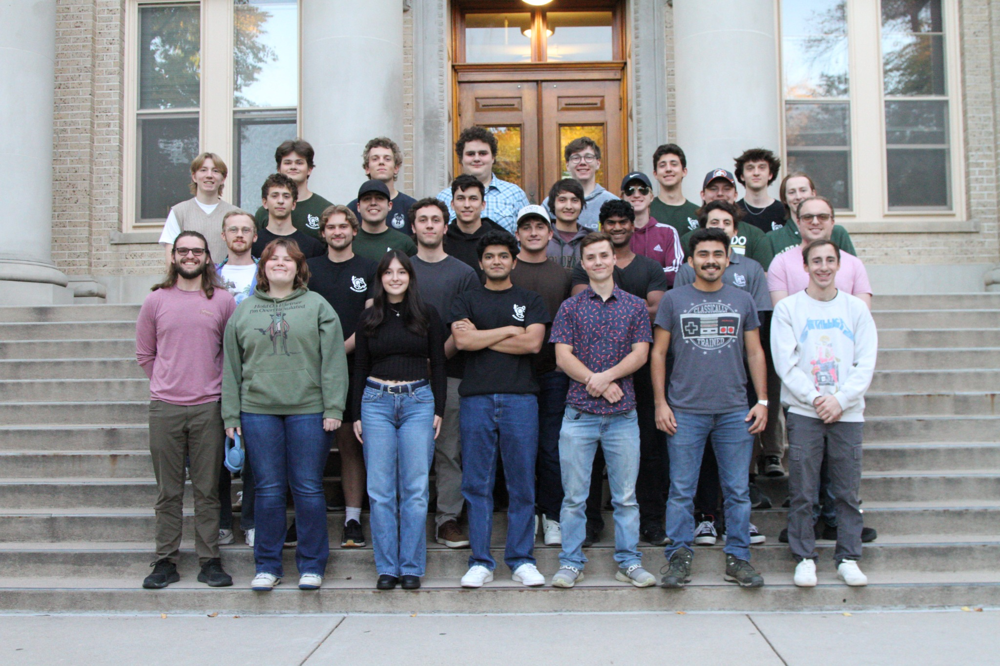
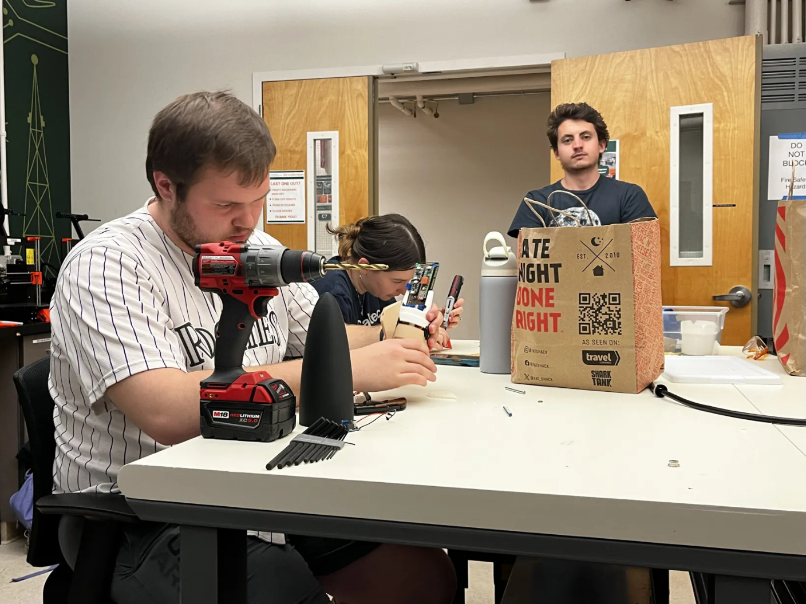
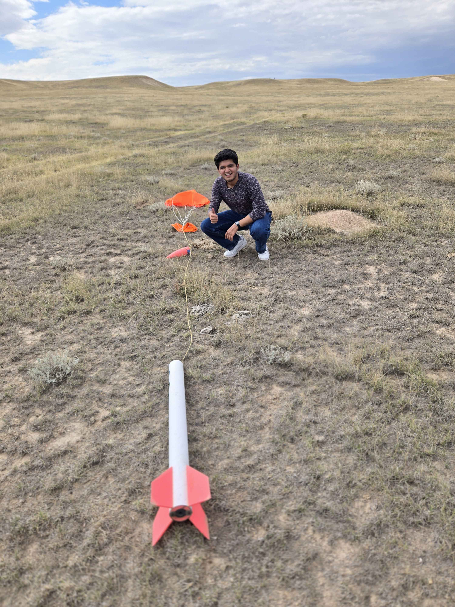
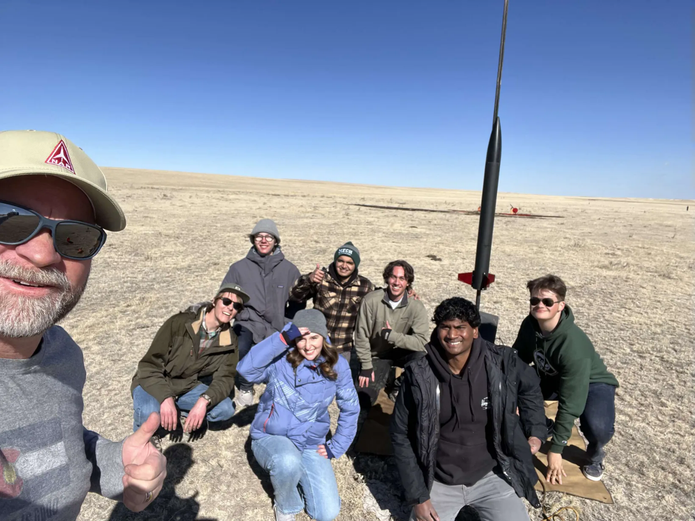

Ram Rocketry
Ram Rocketry taught me that leading an engineering team isn't just about making technical decisions. It's also about giving people enough structure, information, and ownership to get useful work done. I served as President of the club and now lead CSU's IREC 2027 effort as Chief Engineer and Team Lead.

- Organization
- 40+ active members
- Role
- IREC Chief Engineer & Team Lead, former President
- IREC target
- 10,000 ft COTS
- Competition
- IREC 2027
Making the club easier to run.
As President, I helped run a club with more than 40 active members and several projects going at once. Weekly meetings were the visible part. A lot more time went into budgets, schedules, recruiting, and helping technical leads get the decisions and resources they needed.
I moved the club away from having everything run through the President. Project managers and chief engineers took responsibility for technical programs, while the Vice President coordinated business and communications. That separation became important once sponsorships, procurement, outreach, and vehicle development were all happening at the same time.
I handled relationships with faculty, sponsors, and companies including Lockheed Martin and Ursa Major. Inside the club, I started using project one-pagers, officer task lists, shared calendars, and meeting notes. These aren't complicated systems, but they made it easier for new members to find real work and for returning members to pick up where someone else left off.

Making Level 1 rocketry more affordable.

We developed fully 3D-printed L1 rocket kits for Ram Rocketry, reducing the cost of pursuing a Level 1 certification by more than 50%. The kits lowered the financial barrier for club members to build their own rockets and take part in high-power rocketry.
My own L1 rocket is shown here after recovery. This work connected hands-on rocket building with a broader club goal: giving more members an affordable way to gain experience with flight hardware. See the full R1 kit project →
Program management with engineering consequences.
I am Chief Engineer and Team Lead of the 2026–27 IREC team and responsible for all of its technical decisions, processes, and methods. I lead the composite airframe and the airframe and airbrake software, and I make the avionics, payload, and recovery design decisions against the IREC requirements. See the full Bighorn case study →
We're building Bighorn for the 10,000 ft COTS category at IREC 2027. With structures, recovery, avionics, airbrakes, payload, and propulsion integration all happening in parallel, I focus on requirements and interfaces so the pieces work as one vehicle.
I maintain the requirements, schedule, design-review process, and integration records. I want interface problems to come up during a review or a ground test, not for the first time at the launch site.
We're using subscale flights to find problems in manufacturing, avionics, recovery, and flight simulation before committing to full-scale competition hardware.
Requirements
System-level requirements, mass and stability constraints, subsystem interfaces, and a common definition of success.
Schedule
Master Gantt, internal deadlines ahead of competition dates, worklogs, procurement timing, and review gates.
Reviews
SRR, PDR, CDR, test readiness, and flight readiness as places to expose unresolved engineering, not presentation exercises.
Integration
Airframe, recovery, avionics, airbrakes, payload, dynamics, and manufacturing treated as one vehicle rather than separate projects.

What I changed about how I lead.
Early on, I left too many decisions open and assigned work too close to the deadline. I also spent too much time on outreach while internal operations needed attention. Telling everyone to communicate better wasn't going to fix that.
Now I try to put an owner and a deadline on each decision, make deliverables clear before the work begins, and leave time for review. I also document what happened so the next group doesn't have to rediscover the same problems.
No short-notice work by default.
If a task matters, it should enter the schedule early enough for someone to do it well and for another person to review it.
Turn “maybe” into a decision.
Open questions need a decision owner, the evidence required to close them, and a date when the team will stop carrying the ambiguity.
Use shared standards.
The team needs common metrics for success. My private standard is useless if nobody else knows what the finished work is supposed to do.
Documentation is engineering work.
Requirements, checklists, test plans, meeting decisions, and failure notes are part of building a reliable system, not administrative cleanup afterward.
What I am trying to make repeatable.
People
Clear roles, onboarding, underclassman-to-senior knowledge transfer, and accountability without making the club dependent on one officer.
Program controls
A single schedule, requirements trail, review cadence, expense tracking, and decisions that can be reconstructed later.
Technical integration
Interfaces across flight dynamics, structures, avionics, recovery, airbrakes, payload, manufacturing, and testing.
External relationships
Faculty, university resources, competition organizers, sponsors, mentors, and recruiting treated as part of the engineering program.
Continuity
Leave behind files, processes, and trained members that let the next team start farther ahead than we did.